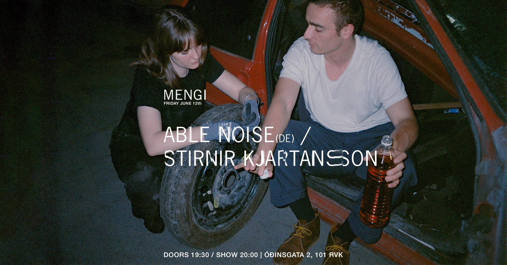
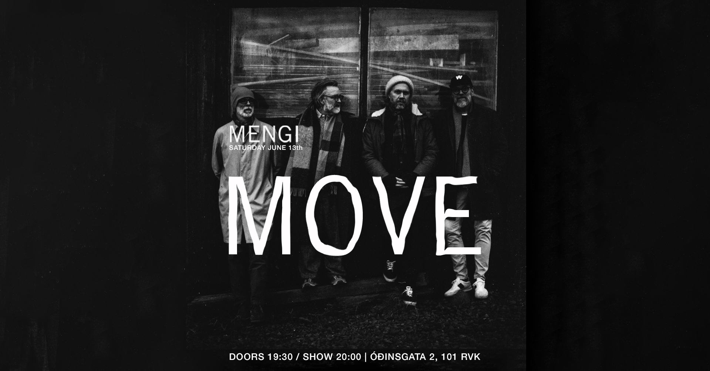
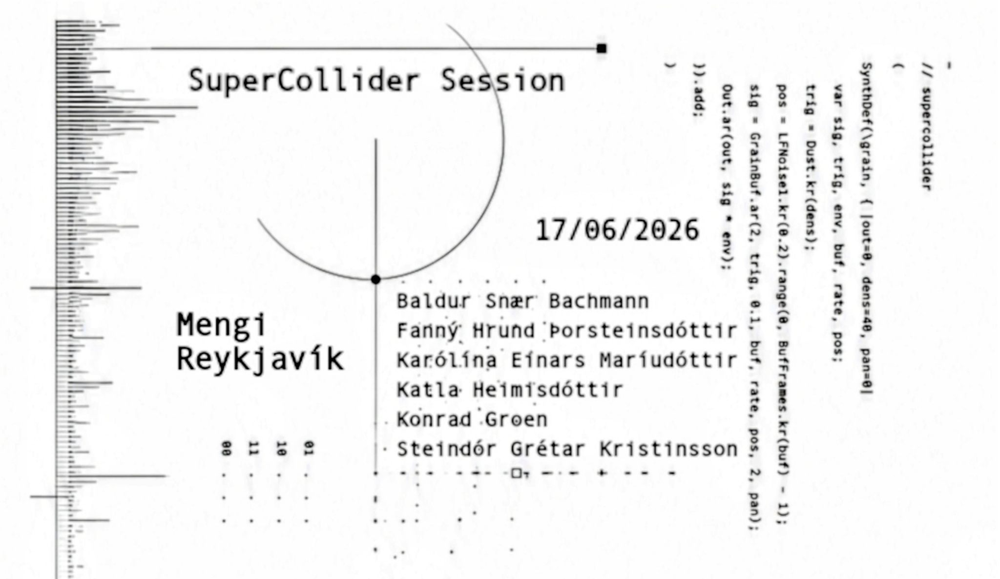
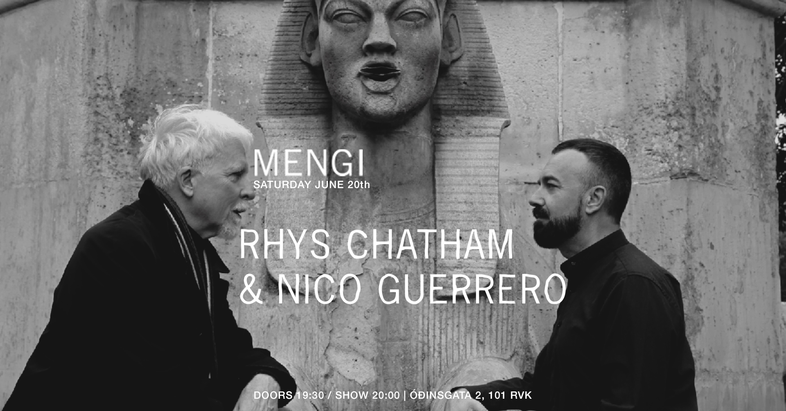
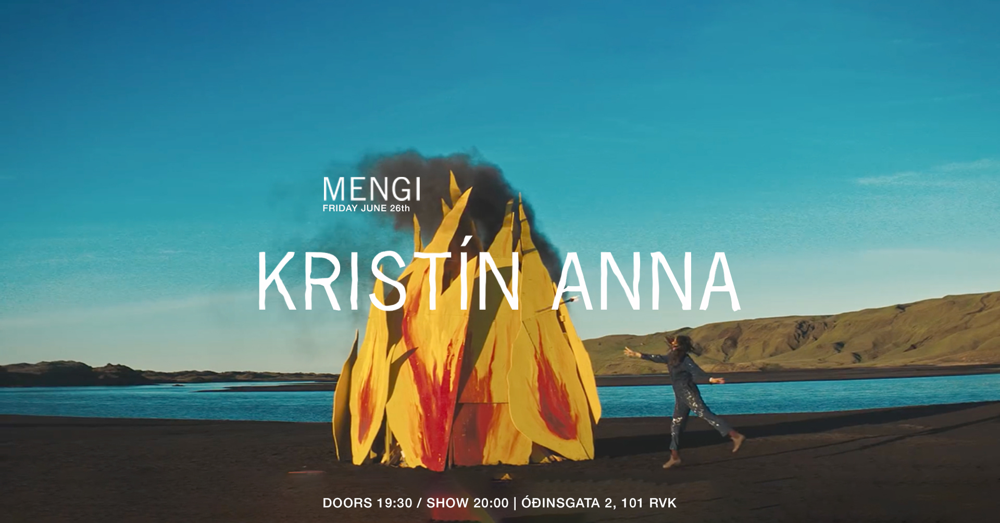
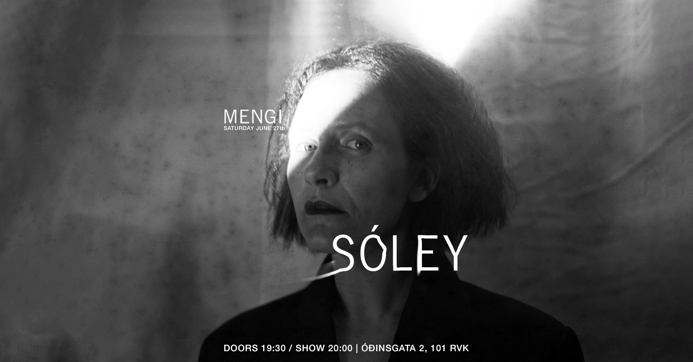

Upcoming Events

FRI 12.06 Stirnir Kjartansson / Able Noise (DE)
Tickets Friday, June 12th STIRNIR KJARTANSSON / ABLE NOISE (DE) 2500kr / 2000kr students / pay what u can Stirnir Kjartansson is a guitarist, songwriter, composer, etc. He is usually associated with the scene surrounding the post-dreifung art collective and he has been in countless bands over the years and has played and worked with a diverse range of artists. In recent years, Stirnir has investigated the acoustic phenomena that may appear in loud and resonant musical situations in the form of big bands consisting of many amplified electric guitars. In his musical creation, Stirnir places great emphasis on the synchronization and balance of sound through the use of resonance, diversity, and the subjective nature of our senses. ----- Able Noise is George and Alex’ experimental baritone guitar and drum duo, based between The Hague, the Netherlands and Athens, Greece. Through the use of voice, tape and alternative methods of playing their instruments, they create a minimal and visual musical performance. Their output is primarily focused on live concerts, letting their music be shaped by the physicality of their playing, the acoustic and aesthetic properties of the space, and the dynamics formed between themselves and their audience. Their recorded work relies less on their respective instruments, and more on an assemblage of field recordings, heavily processed instrumentation, and exploratory mixing techniques. They released their debut on the Glasgow label GLARC in 2020, and their debut LP ‘High Tide’ was released on the 1st of November 2024 through London label World of Echo.

SAT 13.06 MOVE
Tickets Saturday, June 13th MOVE doors 19:30 / show 20:00 2500kr / 2000kr students / pay what u can Á tónleikunum kemur fram hljómsveit saxófónleikarans Óskar Guðjónssonar, Move þar sem Óskar vildi takast á við sígildasta form jazztónlistar, lúður með píanótríói. Hann stofnaði því kvartettinn MOVE með Eyþóri Gunnarssyni píanóleikara, Valdimar Kolbeini Sigurjónssyni kontrabassaleikara og Matthíasi M.D. Hemstock trommuleikara. Þeir hafa æft vikulega frá árinu 2017 og leita leiða til að nálgast eigið efni með eigin aðferðum og allri þeirri fjölbreytni sem þeir finna upp á. Fjórmenningarnir eru þekktir í íslensku tónlistarlífi og hafa allir skapað sér sérstöðu með persónulegri nálgun á fjölbreyttustu viðfangsefni. Ekki skortir þar áskoranir, meðal annars þá hvort þeirra aðferðir við tónsmíðar og samleik sé lituð af því sem má eða má alls ekki. Hvort réttar skoðanir, samkvæmt þeim reglum og siðvenjum sem gilda til dæmis um íslenska tungu, hafi áhrif á sköpun og túlkun tónlistar. Þeir vilja brjótast úr höftum slíkrar rétthugsunar í tónsmíðum og túlkun, leika lausum hala. Frá unglingsárum hefur Óskar Guðjónsson verið eftirsóttur saxófónleikari í íslensku tónlistarstórfjölskyldunni. Spunatónlist, jazz (djass), stendur hjarta hans næst. Á þeim vettvangi hefur hljómsveitin ADHD vakið verðskuldaða athygli innan og utan landsteina, tónleikaferðir um Evrópu norðanverða skipa stóran sess í lífi hljómsveitarmeðlima. Þeir eru, auk Óskars, bróðir hans Ómar gítarleikari, Magnús Tryggvason Elíasson trommuleikari og Tómas Jónsson hljómborðsleikari. Samstarfs Óskars og Skúla Sverrissonar, tónskálds og bassaleikara, hefur einnig verið gæfuríkt og galopnað augu og eyru Óskars fyrir fleiri möguleikum jazztónlistar. Afraksturinn er tvær plötur og ótal tónleikar.

WED 17.06 Supercollider Session
Tickets Wednesday, June 17th SuperCollider Session doors 19:30 / show 20:00 2500kr / 2000kr students / pay what u can 6 performances worked in Supercollider. Supercollider is a programming environment and language for real-time audio synthesis and algorithmic composition, widely used in experimental music and sound-based practices. Throughout the evening, each performer will present a short set composed and executed entirely through code, using techniques in synthesis, pattern generation, and real-time control. Performers: Baldur Snær Bachmann, Fanný Hrund Þorsteinsdóttir, Karólína Einars Maríudóttir, Katla Heimisdóttir, Konrad Groen, Steindór Grétar Kristinsson
FRI 19.06 Yul4iK & Einar
Tickets Friday, June 19th YUL4IK & EINAR doors 19:30 / show 20:00 2500kr / 2000kr students / pay what u can YULIA VASILEVA & EINAR HUGI more info tba

SAT 20.06 Rhys Chatham & Nico Guerrero: Athanor
Tickets Saturday, June 20th RHYS CHATHAM & NICO GUERRERO: ATHANOR doors 19:30 / show 20:00 3000kr / 2500kr students / pay what u can Mengi presents the Icelandic premiere of Athanor, the collaborative duo project of legendary American composer, guitarist and trumpet player Rhys Chatham and French guitarist and experimental composer Nico Guerrero. Marking Chatham’s first ever performance in Iceland, the concert will feature the duo performing material from their album Athanor, released in early 2026 on Erototox Decodings. A major figure of the New York downtown and No Wave scene since the 1970s, Rhys Chatham pioneered a radical meeting point between minimalism, amplified sound and electric guitar orchestras. Nico Guerrero has developed since the 1990s an immersive body of work centered around drone, resonance and altered states of perception through electric guitar and electronic transformation. Conceived as a process of sonic transmutation rather than a conventional collaboration, Athanor unfolds through electric guitars, bass and alto flutes, Pythagorean tunings, electronic filters and slowly evolving overtones friction. Waves of resonance accumulate into dense spectral fields where breath, metal and electricity dissolve into a single vibrating matter. Thurston Moore described the album as “a beauty of bliss drone post-minimalism excellence.” The concert will also feature the screening of a film created especially for the duo by Icelandic filmmaker Ari Allansson. The concert is presented in partnership with the Alliance Française in Reykjavik and the French Embassy.

FRI 26.06 Kristín Anna: Lay Me Down
Tickets Friday, June 26th KRISTÍN ANNA: LAY ME DOWN doors 19:30 / show 20:00 2500kr / 2000kr students / PAY WHAT U CAN Kristín Anna er listamaður, tónskáld og tónlistarkennari. Hún var meðlimur hljómsveitarinnar múm á árunum ´98-´06 og harmónikkuleikari í Stórsveit Nix Noltes til fjölda ára. Hún hefur samið og flutt tónlist og gjörninga undir eigin nafni eða sem Kría Brekkan. Kristín Anna hefur starfað með fjölda aðþjóðlegra listamanna í ýmsum greinum sköpunarinnar; leikhúsi, dansi, útvarpsleikhúsi, kvikmyndum, gjörningum og myndlistarinnsetningum. Hún hefur unnið mikið og náið með listamaninnum Ragnari Kjartanssyni að gjörningalist og birtist í fjölda vídjó-innsetninga hans. Kristín Anna samdi tónlist við kvikmyndina Svar við bréfi Helgu og mun sú tónlist koma út undir merkjum bandarísku útgáfunnar Sono Luminus nú í sumar.

SAT 27.06 Sóley
Tickets Saturday, June 27th SÓLEY doors 19:30 / show 20:00 2500kr / 2000kr students / pay what u can Sóley Stefánsdóttir er tónskáld og lagahöfundur úr Hafnarfirði. Hún útskrifaðist af tónsmíðabraut Listaháskóla Íslands árið 2010 og hefur síðan þá gefið út fjölmargar plötur og verk sem hlotið hafa bæði verðlaun og viðurkenningar. Árið 2022 var Sóley tilnefnd til Norrænu Tónlistarverðlaunanna og hlaut Íslensku Tónlistarverðlaunin sama ár fyrir plötu sína Mother Melancholia. Sóley hefur komið víða að og unnið að tónlist fyrir fjögur leikhúsverk, kvikmyndir og dansverk. Sóley leggur nú lokahönd á nýjasta verkið sitt quean en í verkinu rannsakar hún hinar ýmsu hliðar femínismans; hávaða og einfaldleika, hið mjúka form kvenlíkamans, þögnina og flókið móðurlífið. ----------- Few artists balance fragility and fearlessness quite like Sóley Stefánsdóttir. The Icelandic songwriter, composer, and producer has spent more than a decade and a half crafting music that slips between dark pop, contemporary classical, and cinematic sound design. Her songs, built on hushed vocals and stark piano, seem to glow from within – tender one moment, quietly unsettling the next. Raised in Hafnarfjörður, Iceland, Sóley was drawn to the piano from an early age. She studied classical music before moving into composition at the Iceland Academy of the Arts, where her imagination began to stretch beyond the traditional. Her first solo release, the 2010 EP Theater Island introduced a world of delicate melodies and dreamlike imagery. The following year, her debut album We Sink arrived – an arresting collection of eerie lullabies that announced a singular new voice from Iceland’s ever-fertile scene. Critics were quick to take note, and touring soon carried her across Europe, the US, and Asia. Two other albums followed, Ask The Deep 2015 and Endless Summer 2017 and touring continued. Then came Mother Melancholia (2021), a record that shifted everything. Built around prepared piano, voice, and electronics, it abandoned familiar song forms in favour of something more abstract and cinematic. The result was an apocalyptic meditation on ecological collapse and human fragility – bold, beautiful, and deeply moving. Critics called it her most fearless work to date, and it pushed her further into the world of composition and film scoring. Mother Melancholia received Album of the Year at the Icelandic Music Awards, alongside nominations for Music Video of the Year (directed by Samantha Shay) and Song of the Year. The album also earned Album of the Year honors from The Reykjavík Grapevine and was nominated for the Nordic Council Music Prize in 2022. Since then, Sóley has continued to expand her creative reach. She has written scores for film and theatre, blending piano, electronics, and voice into immersive sound worlds that mirror her visual storytelling instincts. Collaboration has become central to her process, linking her music to art, stage, dance and screen. Now based in Reykjavík, Sóley continues to move between songwriting and composition, between intimacy and imagination. Over the years, she has built a body of work that is unmistakably her own: poetic, unsettling, and quietly transformative.